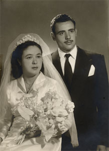
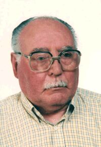

Pedro Juan García Cantarero & Leonor Izquierdo Fernández
Pedro Juan García Cantarero & Leonor Izquierdo Fernández 

 Pedro Juan García Cantarero
Pedro Juan García Cantarero
 Leonor Izquierdo Fernández Manuel García Izquierdo
Leonor Izquierdo Fernández Manuel García Izquierdo
This page is within a frameset. View the entire genealogy report of family Pedro Juan García Cantarero & Leonor Izquierdo Fernández, or surname index or report summary.
Genogram Rules.
© 2006 GenoPro Inc. All Rights Reserved.